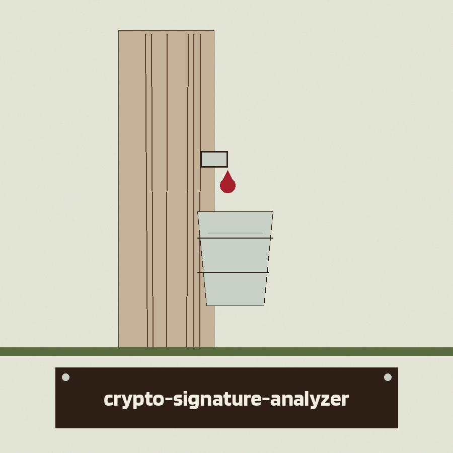
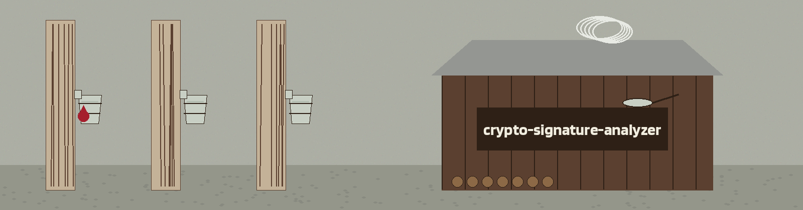

crypto-signature-analyzer: The Sap Tap Sugar Shack
Theme: The Sap Tap Sugar Shack. Headings in Blinker, reading text in Barlow.


ECDSA Unless EdDSA Is Chosen
SHA-256, Not open to Choice
Counted, Parsed, Compared on r alone
The Two Jobs
Job one: verify one signature. The caller gives a PEM public key file, a message, and a hex encoded signature, and chooses ecdsa or eddsa. ECDSA checking presumes DER encoded signatures and SHA-256. EdDSA checking works with Ed25519 keys. Job two: scan a collection. The caller gives a JSON file or a JSON string holding a list of signature objects, and the tool hunts for the same ECDSA r value appearing more than once.
The Single Check
Form: python3 main.py -k public.pem -m MESSAGE -sig HEXSIGNATURE -alg ecdsa, with every value named by kind and no real signature, key, or message of worth written on this page. Two printed outcomes stand under the form. Signature is VALID. Signature is INVALID. An invalid result is a finished check and exits 0, while a key that cannot be loaded, or a key that does not match the chosen algorithm, means no check took place at all; the tool says verification could not be performed and exits 1.
The Collection Scan
Form: python3 main.py -f signatures.json, or the same run with -s followed by a JSON string. The result shape in full: a JSON object holding nonce_reuse, signature_count, and parsed_count. The README example result, in kind only: two signatures, two parsed, reuse found. A no reuse result means something only when parsed_count is greater than zero, and a non empty collection in which nothing parses prints an error and exits 1 rather than reporting no reuse.
Endings
No input at all prints the line telling the caller to use -f or -s, and exits 1. A missing file exits 1. Malformed JSON exits 1. A JSON value that is not a list exits 1. A non hex signature in the single check exits 1. A finished verification exits 0, valid or invalid. A finished scan that parsed at least one signature exits 0. With -alg eddsa and a collection, the tool prints that analysis is only available for ECDSA and exits 1.
Licence
The README licence line is shown as printed in the record below and flagged here in place: it names the organisation in an unhyphenated form. The separate LICENSE file holds the MIT License. The two stand side by side without reconciliation.
Code Facts Restored from the Code
The scan compares r values only; the public key and message inside each collection entry are never read, so the same r under two different keys is reported as reuse, and a positive result is a prompt to check whether the entries share a key.
A signature value that fails DER decoding can still yield an r from its first half of bytes when its length is even, and that number then takes part in the comparison as if cleanly parsed.
The single verification branch wins outright: when key, message, and signature are all present, any collection already loaded from a file is never used; the two jobs cannot run together.
The parser help for the file argument claims each entry should include signature, message, and public key keys; the scan reads the signature field alone, and the README states that one field correctly.
The Preserved Record
# crypto-signature-analyzer
A command line tool with two jobs: verify one ECDSA or EdDSA signature against a PEM public key, and scan a collection of ECDSA signatures for nonce reuse (the same `r` value appearing in more than one signature, a known key compromise risk).
## Requirements
- Python 3.10 or later
- `cryptography` 41.0.0 or later
## Install
```bash
git clone https://github.com/ShadowGuard-AI/crypto-signature-analyzer.git
cd crypto-signature-analyzer
pip install -r requirements.txt
```
## Usage
```
python3 main.py [-h] [-f SIGNATURE_FILE] [-s SIGNATURES_JSON] [-k PUBLIC_KEY]
[-m MESSAGE] [-sig SIGNATURE] [-alg {ecdsa,eddsa}] [-v]
```
- `-f`, `--file`: path to a JSON file containing a list of signature objects
- `-s`, `--signatures`: JSON string containing a list of signature objects
- `-k`, `--public_key`: path to a PEM encoded public key file
- `-m`, `--message`: message associated with the signature
- `-sig`, `--signature`: signature to verify, hex encoded
- `-alg`, `--algorithm`: `ecdsa` (default) or `eddsa`
- `-v`, `--verbose`: enable verbose output
- `-h`: show help and exit
### Verify a single signature
All three of `-k`, `-m`, and `-sig` are required. ECDSA verification assumes DER encoded signatures and SHA-256. EdDSA verification works with Ed25519 keys.
```bash
python3 main.py -k public.pem -m "hello world" -sig <hex signature> -alg ecdsa
# prints: Signature is VALID.
python3 main.py -k public.pem -m "tampered" -sig <hex signature> -alg ecdsa
# prints: Signature is INVALID.
```
`Signature is INVALID.` means the signature was checked and did not verify, and that result exits 0. If the public key cannot be loaded or does not match the chosen algorithm, no verification takes place: the tool prints an error line stating that signature verification could not be performed and exits 1, instead of reporting the signature as invalid.
### Scan a collection for ECDSA nonce reuse
Each list item must have a `signature` field containing a hex encoded signature. Both DER encoded signatures and raw `r||s` concatenations are accepted, and the `r` value is extracted from either format. Unparseable entries are skipped and do not count toward the result.
```bash
python3 main.py -f signatures.json
python3 main.py -s '[{"signature": "aaaa1111"}, {"signature": "aaaa2222"}]'
```
Output for the second example (both signatures share `r` = 0xaaaa):
```json
{
"nonce_reuse": true,
"signature_count": 2,
"parsed_count": 2
}
```
The no reuse result is only meaningful when `parsed_count` is greater than zero. If a non-empty collection is scanned and no signature in it can be parsed, the tool prints `Error: No signature in the collection could be parsed.` and exits 1, and it does not print a no reuse verdict for that scan.
With no input the tool prints `No signatures provided for analysis. Use -f/--file or -s/--signatures.` and exits 1. The exit code is 1 for bad input generally (a missing file, malformed JSON, a JSON value that is not a list of signatures, or a non-hex signature) and for a public key that cannot be loaded or does not match the chosen algorithm; a completed verification exits 0 whether the signature is valid or not, and a completed scan that parsed at least one signature exits 0.
## Limitations
- Collection analysis is available only for ECDSA. With `-alg eddsa` and a signature list it prints `Analysis only available for ECDSA signatures.`
- It detects exact `r` reuse only. It does not check for biased nonces, weak randomness short of reuse, or malleability, despite those being related ECDSA risks.
- ECDSA verification always uses SHA-256; other hash choices are not configurable.
## License
Copyright (c) ShadowGuardAI
## Diagrams and maps
I drew the tool out in [crypto-signature-analyzer-Visuals](crypto-signature-analyzer-Visuals/): an architecture diagram, a data-flow diagram for the scan, a flowchart of main(), and a product map, with the written product map, statistics with citations, and the roadmap in [VISUAL.md](crypto-signature-analyzer-Visuals/VISUAL.md). Every sheet also ships as a PNG photograph of the paper page beside its SVG.